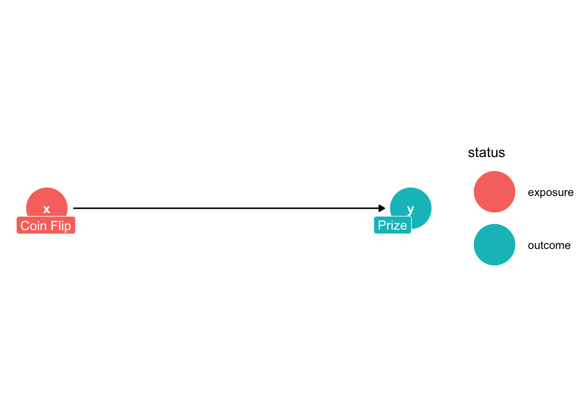
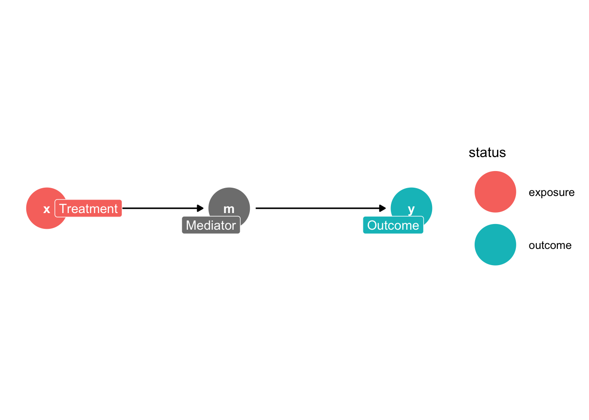
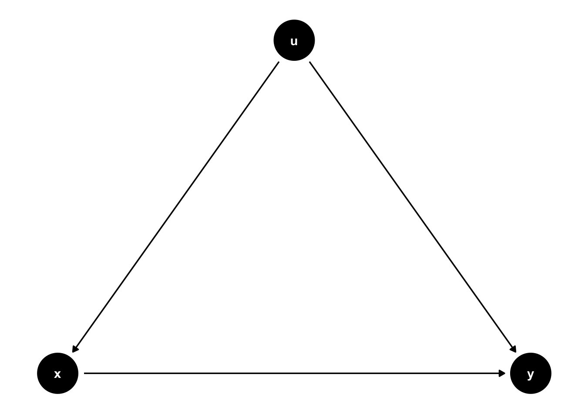
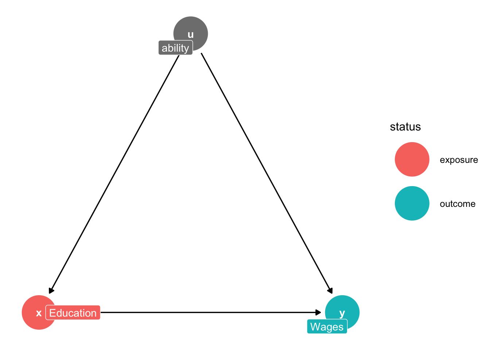
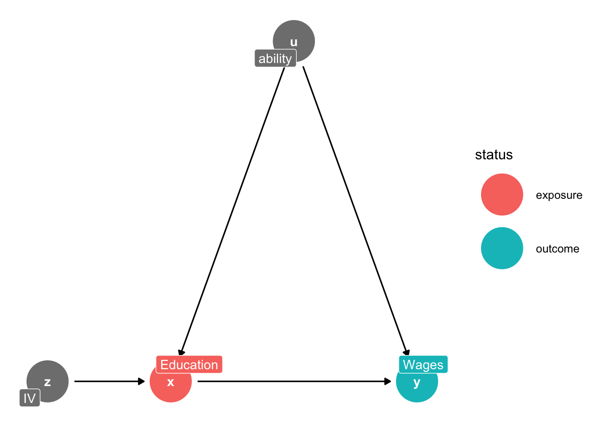
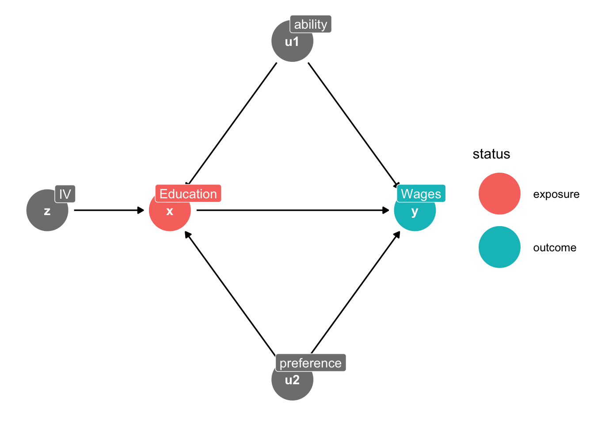
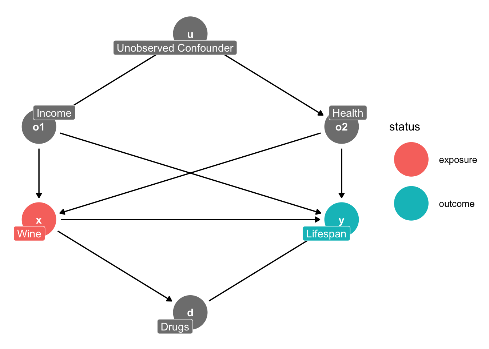

Chapter 1 Directed Acyclic Graphs
We will use the R package ggdag to develop directed acyclic graphs for our data generation process.
As Huntingon-Klein (2022) mentions, DAGs are graphical representation of the data generation process.
- Nodes represent variables in data generation process.
- The causal relationship are represented by the direction of an arrow.
We will need to load our libraries to create DAGs.
Before we get started, if you want to us R, then these sites can be helpful for you:
We will start with a simple DAG, where \(x \rightarrow y\). We are saying that x causes y in the data generation process.
1.1 A Simple Directed Acyclic Graph (DAG)
We will assume that there is a data generation process, where our treatment \(coinflip\) could be a randomized coin flip and our outcome is a \(prize\). The data generation process shows explains the data that we observe in regard to \(coinflip\) and \(prize\). It is a direct effect from coin flip to prize. If you win the coin flip, you get a prize. If you lose the coin flip, you do not get a prize.
We can use the dagify function to display the DAG.
dag1<-dagify(y ~ x, exposure="x",outcome="y",
labels=c(y="Prize",x="Coin Flip"),
coords=list(x=c(x=1,y=2),
y=c(x=0,y=0)))
ggdag_status(dag1,use_labels = "label")+theme_dag()
Direct Effect: we show that the treatment, \(coinflip\), has a direct effect onto the outcome, \(prize\) with \(coinflip \rightarrow prize\).
1.2 DAG with a Mediator
We can add a mediator to our DAG. A mediator is a variable that lies between the treatment and the outcome, or a mediator descends from the treatment to affect the outcome. For example, treatment may or may not include direct funding, and the only factor affecting the amount of direct funding is the treatment.
dag1<-dagify(y ~ m, m ~ x, exposure="x",outcome="y",
labels=c(y="Outcome",x="Treatment",m="Mediator"),
coords=list(x=c(x=1,m=2,y=3),
y=c(x=0,m=0,y=0)))
ggdag_status(dag1,use_labels = "label")+theme_dag()
Indirect Effect: \(X \rightarrow M \rightarrow Y\). When \(X\) has an indirect effect on \(Y\) when it is mediated by \(M\). \(X\) has an effect on \(Y \ \) through the mediator \(M\), such that \(X\) affects \(M\) which then affects \(Y\)
1.3 DAG with a confounder
Next, we will add a confounder to our data. A confounder is a variable that affects both the treatment and outcome. Such that, a confounder mediates the treatment and outcome, and confounds our estimate of the direct effect.
We had additional commands besides dagify and ggdag. We can use the daggity, tidy_dagitty, and gg_dag commands. This is another set of commands to create DAGS.
library(ggdag)
library(ggplot2)
dag2<-dagitty::dagitty("dag {
x<-u->y
x->y
x [education]
y [treatment]
}")
coordinates(dag2)<-list(x=c(x=1,u=2,y=3),y=c(x=0,u=1,y=0))
tidy_dag2<-tidy_dagitty(dag2)
tidy_dag2
ggdag(tidy_dag2) + theme_dag()
We can use dagify command and use labels.
dag3<-dagify(y ~ x, y ~ u, x ~ u,exposure="x",outcome="y",
labels=c(y="Wages",x="Education",u="ability"),
coords=list(x=c(x=1,u=2,y=3),
y=c(x=0,u=1,y=0)))
ggdag_status(dag3,use_labels = "label")+theme_dag()
Let’s talk about our paths here.
Front Door Path: a causal path where all the arrows point away from the treatment (Huntington-Klein, 2022).
- \(x \rightarrow y\)
Back Door Path: a causal path that at least one arrow points towards the treatment (Huntington-Klein, 2022)
- \(x \leftarrow u \rightarrow y\)
If there are any back door paths open, then we cannot identify the causal effect of \(x \rightarrow y\). We need an identification strategy to close the back door path. Next, we will cover a familiar identification strategy in this particular case.
1.4 Instrumental Variable DAG
We can use a DAG as an identification strategy. Here we show how an instrument, \(z\) affects \(x\) which then affects \(y\). We use the variation in \(x\) that is due to exogenous variation in \(z\).
dag3<-dagify(y ~ x, y ~ u, x ~ u,x ~ z,exposure="x",outcome="y",
labels=c(y="Wages",x="Education",u="ability",z="IV"),
coords=list(x=c(x=1,u=2,y=3,z=0),
y=c(x=0,u=1,y=0,z=0)))
ggdag_status(dag3,use_labels = "label")+theme_dag()
We can use an instrument to close the back door path, and we utilize the exogenous variation in \(z\) to purge the variation in \(x\) that is endogenous with \(u\).
Huntington-Klein (2022) discusses good paths and bad paths.
Good Path: A causal pathway is a good pathway if it describes the reason why the treatment and outcome are related to answer your research question of interest.
Bad Path: A causal pathway is a “bad” pathway if it describes an alternative explanation of the data not related to your research question of interest.
Bad Paths are related to Back door Paths since backdoor paths, when not closed, allow alternative explanations of the data we observe. For the confounder, without the instrumental variable, we cannot say how much of the variation in \(y\) is due to \(x\) or \(u\). Ability provides an alternative explanation of why we observe the wages that we observe. We want to have an instrumental variable that closes the bad path of \(u\)’s causal paths onto \(x\) AND \(y\). Once we have a legit identification strategy
1.5 DAG for Instrumental Variables with Two Confounders
We can add another confounder to our DAG, such as preference and ability.
dag3<-dagify(y ~ x, y ~ u1, x ~ u1,x ~ z,x ~ u2, y ~ u2, exposure="x",outcome="y",
labels=c(y="Wages",x="Education",u1="ability",u2="preference",z="IV"),
coords=list(x=c(x=1,u1=2,y=3,z=0,u2=2),
y=c(x=0,u1=1,y=0,z=0,u2=-1)))
ggdag_status(dag3,use_labels = "label")+theme_dag()
Again, our instrument variable closes the backdoor paths for both \(u1\) and \(u2\), and we are able to identify the effect of \(x \rightarrow y\).
1.6 A More Complex DAG
We will use an example from Huntington-Klein (2022) for a more complex DAG. We will look at the direct paths, indirect paths, good paths, and bad paths.
dag3<-dagify(y ~ x,
y ~ o1,
x ~ o1,
y ~ o2,
x ~ o2,
o1 ~ u,
o2 ~ u,
d ~ x,
y ~ d,
exposure="x",outcome="y",
labels=c(y="Lifespan",x="Wine",o1="Income", o2="Health",d="Drugs",u="Unobserved Confounder"),
coords=list(x=c(y=3,x=1,o1=1,o2=3,u=2,d=2),
y=c(y=2,x=2,o1=3,o2=3,u=4,d=1)))
ggdag_status(dag3,use_labels = "label")+theme_dag()
Direct Paths
- \(Wine \rightarrow Lifespan\)
Indirect Paths
- \(Wine \rightarrow Drugs \rightarrow Lifespan\)
- \(Wine \leftarrow Income \rightarrow Lifespan\)
- \(Wine \leftarrow Income \leftarrow U \rightarrow Health \rightarrow Lifespan\)
- \(Wine \leftarrow Health \rightarrow Lifespan\)
- \(Wine \leftarrow Health \leftarrow U \rightarrow Income \rightarrow Lifespan\)
Good Paths: a causal pathway that describes a reason why treatment and outcome are related that answers your research question
- \(Wine \rightarrow Lifespan\)
- \(Wine \rightarrow Drugs \rightarrow Lifespan\)
Bad Paths: a causal pathway that describes a reason why treatment and outcome are related, which is unrelated to your research question, such that there is an alternative explanation.
- \(Wine \leftarrow Income \rightarrow Lifespan\)
- \(Wine \leftarrow Income \leftarrow U \rightarrow Health \rightarrow Lifespan\)
- \(Wine \leftarrow Health \rightarrow Lifespan\)
- \(Wine \leftarrow Health \leftarrow U \rightarrow Income \rightarrow Lifespan\)